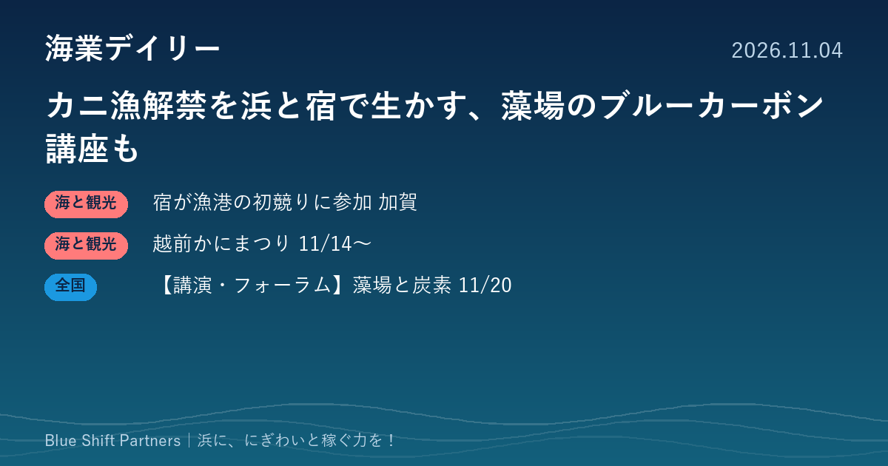

2026.11.04
カニ漁解禁を浜と宿で生かす、藻場のブルーカーボン講座も

11月6日のズワイガニ漁解禁を前に、北陸では温泉旅館が漁港の初競りに参加し、福井県越前町では道の駅でかにまつりが開かれます。東京では、藻場づくりとブルーカーボンのビジネス化をテーマにしたセミナーも予定されています。
温泉旅館グループが橋立漁港のカニ初競りに参加、宿で客参加型の競りを開催
大江戸温泉物語グループ（GENSEN HOLDINGS株式会社）は、11月6日のカニ漁解禁に合わせて、石川県加賀市の橋立漁港で行われる初競りに参加すると発表しました。競り落とした「加能ガニ」は翌7日に同市山代温泉の「大江戸温泉物語Premium 山下家」へ直送し、宿泊客どうしが競り合う参加型のオークションを開いて、落札者に料理長が調理した料理を提供します。同社が加賀エリアの8つのホテル・宿で進める「北陸ローカライズプロジェクト」の第2弾で、6月に支配人が漁港などを訪ねたことがきっかけとされています。
ここがポイント：漁港の「競り」そのものを宿泊客の体験に変え、地元の魚の価値を宿の売り物にする形です。宿泊施設と漁協・市場が組めば、水揚げの日を観光の目玉にできることを示しています。
出典：GENSEN HOLDINGS株式会社（大江戸温泉物語グループ）プレスリリース（PR TIMES）（2026-10-23）
福井県越前町で「越前かにまつり2026」、道の駅で2週末にわたり開催
越前町、越前町漁業協同組合、越前町商工会などでつくる越前かにまつり実行委員会は、11月14日・15日と21日・22日の4日間、道の駅「越前」（福井県丹生郡越前町）で「越前かにまつり2026」を開きます。時間は各日9時から15時で入場は無料です。越前がにやせいこがにの即売、干物などの海の幸や海鮮グルメの販売のほか、かにの甲ら積みゲーム（有料）や越前がにミュージアムと連携したクイズラリーが行われ、くりや漁港広場の臨時駐車場からはシャトルバスが出ます。
ここがポイント：町・漁協・商工会が一つの実行委員会を組み、道の駅を会場に旬の水産物を直売する形です。漁港の近くに人を集める拠点があると、旬の時期を地域全体の集客に生かせます。
出典：えちぜん観光ナビ（越前町観光連盟）「越前かにまつり2026（@道の駅越前）」（2026-11-02）
【講演・フォーラム】NEDOとKAISO BANKがブルーカーボンのビジネス化を解説、11月20日
株式会社日本計画研究所（JPI）は、11月20日（金）13時30分から15時30分まで、東京都港区のJPIカンファレンススクエアでセミナー「ブルーカーボンを取り巻く最新動向とビジネス化の課題～全国5漁港の社会実装から見る市場創出の可能性～」を開きます。講師はNEDOフロンティア部GI農水チームの山田恭平氏と、KAISO BANK代表で三省水工株式会社取締役の伊藤敏朗氏で、ブルーカーボンの現状と課題、藻場造成の取り組み、市場づくりの展望を取り上げます。会場のほかライブ配信・アーカイブ配信でも受講でき、受講料は1名37,670円（税込）、地方公共団体の職員向けに11,000円の料金があります。申込は当日12時30分まで受け付けます。
ここがポイント：藻場の再生を、水産資源の回復だけでなくクレジットなどの収入につなげる考え方を学べます。磯焼け対策に取り組む漁協や自治体が、事業化の道筋を考える手がかりになります。
出典：株式会社日本計画研究所（JPI）セミナー案内（2026-10-28）
カニ漁の解禁は、浜にとって一年でいちばん人を呼べる時期のひとつです。宿が競りを体験に変え、町が道の駅で直売の場をつくるように、水揚げの日を「売る日」から「人を呼ぶ日」に広げられないか、旬の魚がある浜ならどこでも考えてみる価値があります。